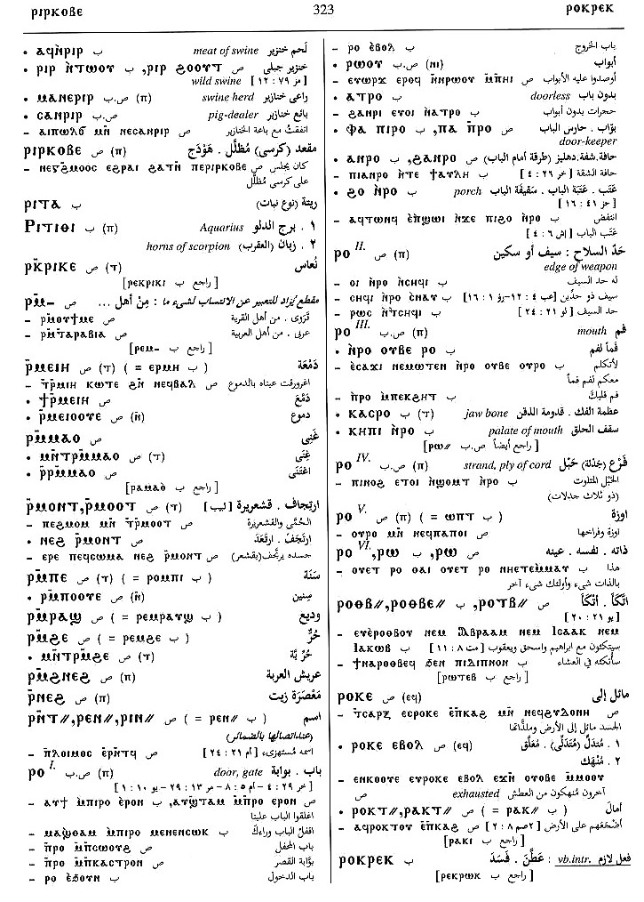
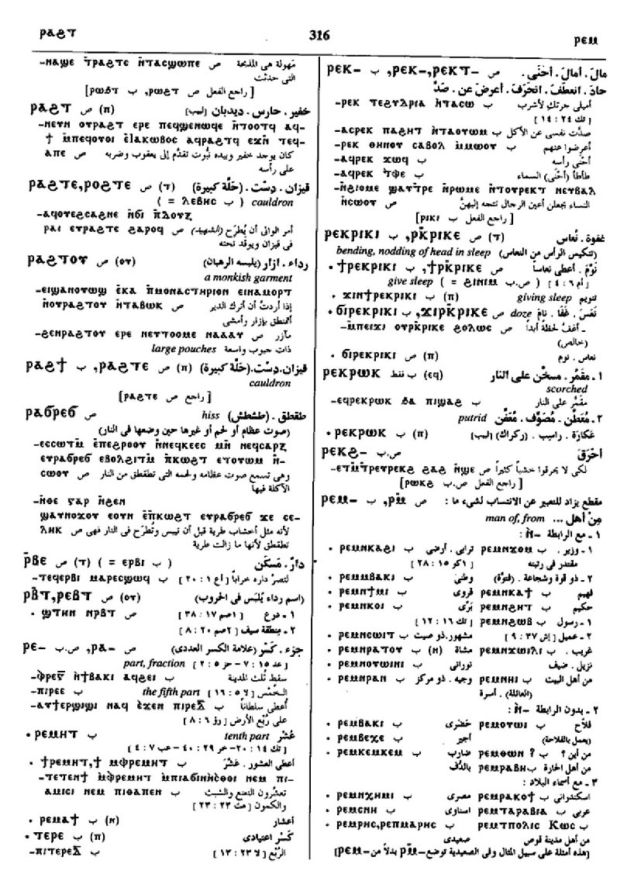
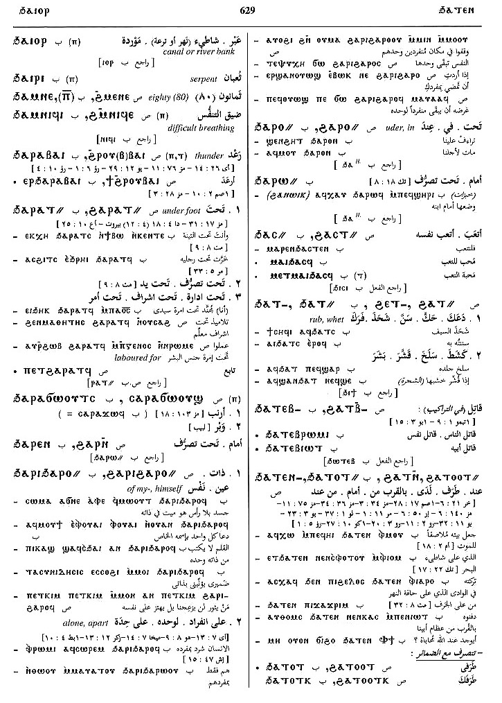
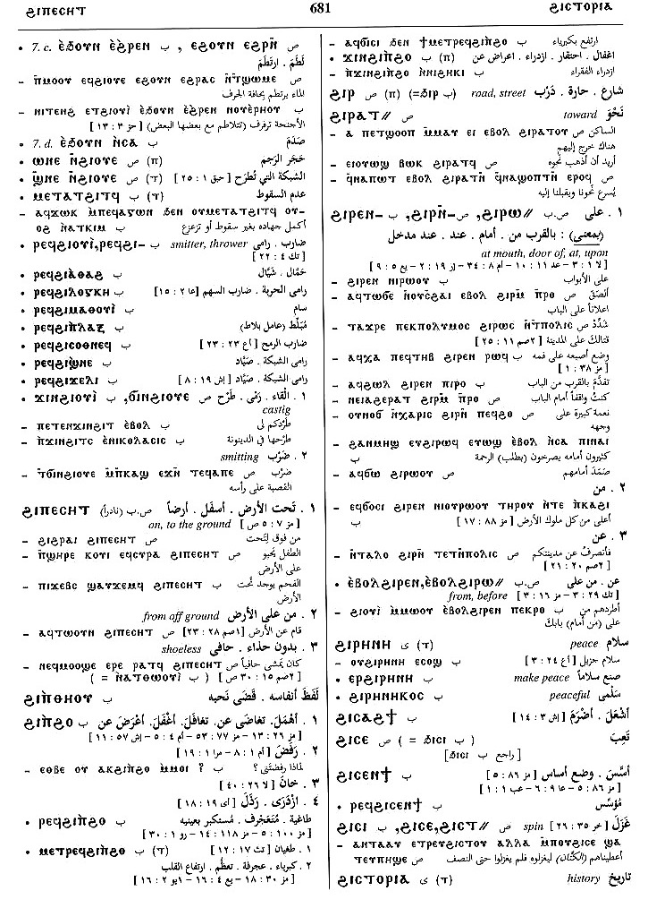

(noun male)
mouth [στομα]
edge of weapon
door, gate [θυρα, πυλη]
edge of weapon
door, gate [θυρα, πυλη]


mouth; edge of weapon; door; gate
(S, A, sA, B)
ⲣⲟ
(Sf) ⲣⲁ
(F) ⲗⲁ
(S) ⲣⲁ-
(S, B) ⲣⲉ-
(F) ⲗⲉ-
(S, A, sA, B, O) ⲣⲱ=
(F) ⲗⲱ=
(S, A, sA, B) plural: ⲣⲱⲟⲩ
(A) plural: ⲣⲟⲟⲩ
(F) plural: ⲗⲱⲟⲩ
(Sf) ⲣⲁ
(F) ⲗⲁ
(S) ⲣⲁ-
(S, B) ⲣⲉ-
(F) ⲗⲉ-
(S, A, sA, B, O) ⲣⲱ=
(F) ⲗⲱ=
(S, A, sA, B) plural: ⲣⲱⲟⲩ
(A) plural: ⲣⲟⲟⲩ
(F) plural: ⲗⲱⲟⲩ
| mouth1518 | Crum: 288a | ||||||||
| ⲁⲧⲣⲱϥ, ⲁⲑⲣⲱϥ | mouthless, not speaking the language1519 | ||||||||
| (S, A, B, F)
ⲕⲱ
ⲛⲣⲱ=, ⲭⲱ ⲛⲣⲱ=, ⲕⲁ ⲣⲱ=, ⲭⲁ ⲣⲱ=
(S) ⲕⲁⲣⲁⲉⲓⲧ+ |
place, leave mouth, be silent [σιωπαν]1520 | Crum: 288b | |||||||
| c ⲉ- | be silent toward, about5957 | ||||||||
| c ⲉϫⲛ- | sim5958 | ||||||||
| c ⲉⲧⲃⲉ- | sim5959 | ||||||||
| c ⲉⲃⲟⲗ | 5960 | ||||||||
| c ⲉⲡϣⲱⲓ | open mouth upward, lift up voice5961 | ||||||||
| ⲕⲁ ⲣⲱϥ, ⲭⲁ ⲣⲱϥ | (noun)
silence [σιγη]1521 |
||||||||
| (S, B) ⲁⲧⲕⲁ ⲣⲱ=, ⲁⲧⲭⲁ ⲣⲱ= | without leaving mout shut, never silent1522 | ||||||||
| (S) ⲙⲛⲧⲣⲉϥⲕⲁ ⲣⲱϥ | silence [σιωπη]1523 | ||||||||
| (S, sA) ⲕⲁⲣⲁⲉⲓⲧ+ | be silent1524 | ||||||||
| (B) ϯ ⲣⲱ= | give mouth, word, promise1525 | ||||||||
| (S, B)
ⲟⲩⲱⲛ
ⲛⲣⲱ=
(S) ⲟⲩⲟⲛ ⲣⲟ |
open mouth1526 | ||||||||
| (S, B) ϫⲓ ⲣⲱ=, ϭⲓ ⲣⲱ= | deprive, prevent, anticipate1527 | ||||||||
| (B) ϫⲉⲕ ⲣⲱ= | fill mouth, satisfy [πληρουν]1528 | Crum: 289a | |||||||
| door, gate1529 | |||||||||
| ⲁⲧⲣⲟ | doorless [αθυριδωτοσ]1530 | ||||||||
| (S, B) ⲡⲁⲡⲣⲟ, ⲫⲁⲡⲣⲟ | be of the door, doorkeeper1531 | ||||||||
| (S, B)
ϩⲁⲛⲣⲟ
(B) ⲁⲛⲣⲟ, ϩⲟ ⲛⲣⲟ |
(noun male)
porch (?) [υπερθυρον]1532 |
Crum: 289b | |||||||
| (S)
ⲣⲁ-
(S, B) ⲣⲉ- (F) ⲗⲉ- |
(noun male)
part, fraction1533 |
||||||||
| (S)
ⲧⲣⲉ-
(B) ⲧⲉⲣⲉ- |
(noun male)
S once, f once, meaning same1534 |
||||||||
| (S)
ⲉⲣⲛ- {ⲉⲣⲟ ⲛ-}
(A, sA) ⲁⲣⲛ- (F) ⲉⲗⲉⲛ- (S, B) ⲉⲣⲱ= (A, sA) ⲁⲣⲱ= (F) ⲉⲗⲱ= |
(preposition)
to mouth of, to, upon mostly with vb of motion against mostly ⲉⲣⲱ= ⲛ-1535 |
||||||||
| (A) ⲛⲣⲛ- | (preposition)
meaning same1536 |
||||||||
| (S)
ϩⲁⲣⲛ-
{ϩⲁⲣⲟ ⲛ-}
(B) (ϧⲁⲣⲉⲛ-) (S) ϩⲁⲣⲱ= (B) ϧⲁⲣⲱ= |
(preposition)
under mouth of, beneath, before mostly = Gk dat1537 |
||||||||
| (S, A, sA)
ϩⲓⲣⲛ-
{ϩⲓⲣⲟ ⲛ-}
(B) ϩⲓⲣⲉⲛ- (F) ϩⲓⲗⲉⲛ- (S, A, sA, B) ϩⲓⲣⲱ= (F) ϩⲏⲗⲱ=, ϩⲓⲗⲉ=, ϩⲉⲗⲉ=(?) |
(preposition)
at mouth, door of, at, upon1538 |
Crum: 290a | |||||||
| (S, B) ⲉⲃⲟⲗ ϩⲓⲣⲛ- | (preposition)
from before8833 |
||||||||
See also:
Homonyms:
| view | (S, A, sA, B) ⲧⲁⲡⲣⲟ (F) ⲧⲁⲡⲣⲁ, ⲧⲁⲡⲗⲁ | (noun female) mouth [στομα]126 |
| view | (A) ⲡⲁⲓϭⲉ | (noun female) mouth1309 |
| view | (S) ⲕⲏⲡⲉ, ϭⲏⲡⲉ, ϭⲉⲡⲏ (B) ⲭⲏⲡⲓ | (noun male) vaulted place, cellar,
canopy [στεγη, καλυμμα, καμαρα]
palate of mouth301 |
| view | (S, A, sA, B, F) ⲱϣ (S, B) ⲉϣ- (S, sA) ⲱϣ- (S, A, F) ⲁϣ- (B) ϣ- (S, B) ⲟϣ= (Sa, sA) ⲁϣ= (B) p c ⲁϣ- | (verb) cry, announce, sound
― intr: [ηχειν, βοαν, κραζειν] ― tr: [βοαν, καλειν] read S,A,sA,B,F ― intr: [αναγινωσκειν] ― tr: [αναγινωσκειν] promise, vow B ― intr: [ευχεσθαι, επαγγελεσθαι] ― tr: [ευχεσθαι, επαγγελεσθαι, ομολογειν] expect S [νομιζειν]467 |
Homonyms:
| view | (S, B) ⲣⲟ (F) ⲣⲁ | (noun male) strand, ply of cord1317 |
| view | (S, sA, B) ⲣⲱ (S) ⲣⲱⲱ (A) ⲣⲟⲩ (B) ⲣⲟ (F) ⲗⲱ | (particle) enclitic particle,
emphatic or explicative, often untranslatable
― same, again, also esp B ― emphasis or contrast indeed, but ― explicative ― emphasis, even, at all, at last ― in question, then ― after various particles, ⲁⲣⲏⲩ , perhaps, indeed379 |


Dawoud: 323a-323b,
323a, 323a, 325b-326b,
326b, 316a-316b,
629a, 629b, 681b,
449b

323

325

326

316

629

681

449